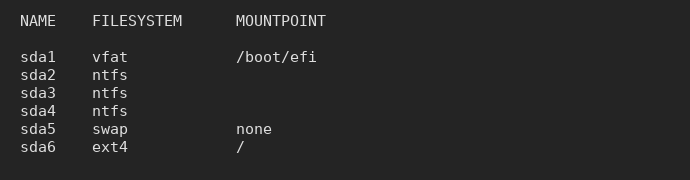

UEFI Boot Process
Introduction
This guide simplifies the Linux UEFI boot process and provides concise illustrations for you to form a clear mental model for the following:
- how Linux boots after turning on the power
- partitioning and mounting
- every step and final goal of installation
The guide is applicable to most distributions of Linux. Ubuntu is used as an example here as it is quite common and user-friendly.
Before continuing, some things to take note...
The general flow of control is as follows. Continue reading the article to piece the puzzle together.
Boot Process

Read steps 1-6 above to understand the Linux boot process; from power on, to starting the bootloader, to loading the kernel and mounting your Ubuntu partition. Continue on for further explanation of these terms.
UEFI and firmware
- small piece of code stored on the motherboard
- launches bootloaders [1]
- each UEFI boot menu entry points to a bootloader, usually found in an EFI system partition.
- a successor to BIOS
EFI system partition (ESP)
- a 'special' partition of a storage device that contains bootloaders
Partitioning
- partitioning divides a storage device into sections (partitions)
- partitioning is 'logical', not an actual physical dividing of the storage device
- the partitioning table (layout) can be reset or changed
Filesystem
- organizes data (files, directories, etc.) stored on a device partition
- allows data to be interpreted in a logical manner, rather than just looking like random 0s and 1s
- the different filesystem types are different ways of organizing your data
Linux Kernel
- the core of the operating system
- responsible for CPU scheduling, memory management, process management, filesystem management, device management, networking
- executable image file that is loaded into RAM during boot process
Initramfs
- initial ram-based filesystem (init-ram-fs)
- contains tools and scripts for mounting the root filesystem, which contains your files and directories and rest of the operating system
init
- the first process, executed by the kernel
- process ID (PID) of 1, parent/ancestor of all other processes
- launches init scripts and other processes for system, service and resource management
Mounting

Mounting
- attach a storage device partition (and its filesystem) at a specified directory (mount point)
- allows read/write of files stored on the partition from that mountpoint
- see my article on Mounting
Bootloader
- loads the kernel and initramfs into RAM
Grub Bootloader
- Ubuntu's default bootloader (there are alternative bootloaders)
- grubx64.efi => located on the EFI system partition, and is the bootloader binary executable file that is executed by UEFI
- grub.cfg => located in /boot directory, and is the configuration file used to change options (configurations) for the grub bootloader,
EFI System Partition (ESP)
- contains Windows bootloader
- contains Ubuntu bootloader (grubx64.efi), which is responsible for loading Ubuntu's linux kernel and initramfs
- usually mounted at mountpoint '/boot/efi', allowing Ubuntu to access files on the ESP partition after booting
What happens when you click "Install Now" (e.g. Ubuntu)
- a bootloader is added to your EFI system partition
- a UEFI boot menu entry is added, pointing at the newly added bootloader in your ESP
- grub configuration files are installed to /boot, along with linux kernel and initramfs
Partitioning Setup End Result
This is just an example. The partition names (e.g. "sda1") may not match yours. "sda" refers to the first storage device that is detected (as opposed to "sdb", "sdc", ...) . sda1 refers to the first partition of the first storage device (as opposed to "sda2", "sda3", ...).
- vfat partition is your ESP partition
- ntfs partition(s) belong to Windows
- swap partition, in simple terms, allows data normally held in RAM (process memory, files, cache) to be 'swapped' to the swap area, acting as an extension of RAM
- ext4 partition is used for storing your Ubuntu (Linux) files (root partition)
- one EFI system partition (/boot/efi)
- one root mountpoint (/)
EFI system partition (ESP)
- vfat filesystem type (otherwise fat12, fat16, fat32)
- '/boot/efi' mountpoint, usually (there exist other possible mountpoints)
- if Windows is already installed, re-use the existing ESP that came along with Windows. Ubuntu will install its bootloader alongside Window's
- for Ubuntu and some other Linux distros, the installer will auto-detect (and auto-mount) the ESP for you. You might not have to worry about the ESP or bootloader at all
'/' (root) mountpoint
- ext4 filesystem type
- '/' mountpoint
- ensure that the correct physical partition has been selected. The installer will reset all data on this partition
Additional Info
UEFI vs BIOS
- UEFI and BIOS are types of firmware, software that is built into the computer/motherboard
- UEFI is regarded as the successor of BIOS
- Read rodsbooks guide on UEFI
EFI applications
- UEFI launches EFI applications, which includes more than just bootloaders. UEFI firmware is capable of loading the Linux kernel directly as an executable into RAM. See EFISTUB for more info.
Boot loader vs Boot manager?
- A boot loader loads the kernel into memory and executes it.
- A boot manager hands off control to another boot program, or to a kernel that can load itself
Fallback (or default) boot path
- bugs in the UEFI firmware may cause boot menu entries stored on the NVRAM on motherboard to be damaged or deleted
- a boot loader/manager can be installed to the fallback path on a storage disk (usually /EFI/boot/bootx64.efi on the ESP partition)
- as long as the UEFI can detect the disk is plugged in, it can try to launch whatever is stored at this path
- Useful for creating portable Linux operating systems on an external SSD. Plug it into a different computer that is UEFI-capable, when it detects the disk, boot off the fallback path, without needing to add a UEFI boot menu entry (commonly done in installation stage)
- Below is my ESP, mounted at '/efi'. It contains Arch Linux bootloader (arch), fallback bootloader (/efi/EFI/Boot/bootx64.efi), Windows boot directories, rEFInd boot manager (refind), Ubuntu boot loader (ubuntu)
Secure Boot
- sign EFI application (bootloader/kernel) with cryptographic signature
- store signed keys in UEFI firmware
- enable secure boot, ensuring only signed EFI applications with corresponding key in firmware can be booted
- Read rodsbooks page on Secure Boot
References
- ArchWiki - Arch Boot Process
- ArchWiki - UEFI
- ArchWiki -Bootloader
- ArchWiki - GRUB bootloader
- Gentoo Wiki - GRUB bootloader
- ArchWiki - EFI system partition (ESP)
- AdamW - UEFI
- Wikipedia - UEFI
- rodsbooks - UEFI Guide
- rodsbooks - rEFInd boot manager
Final Notes
These guides are targeted mostly at newcomers to Linux. The extensive use of illustrations is something I find most other guides lack. I would appreciate any feedback, and corrections if I have made any mistakes. Apologies in advance if I have!
Email:
sky100aw@gmail.com